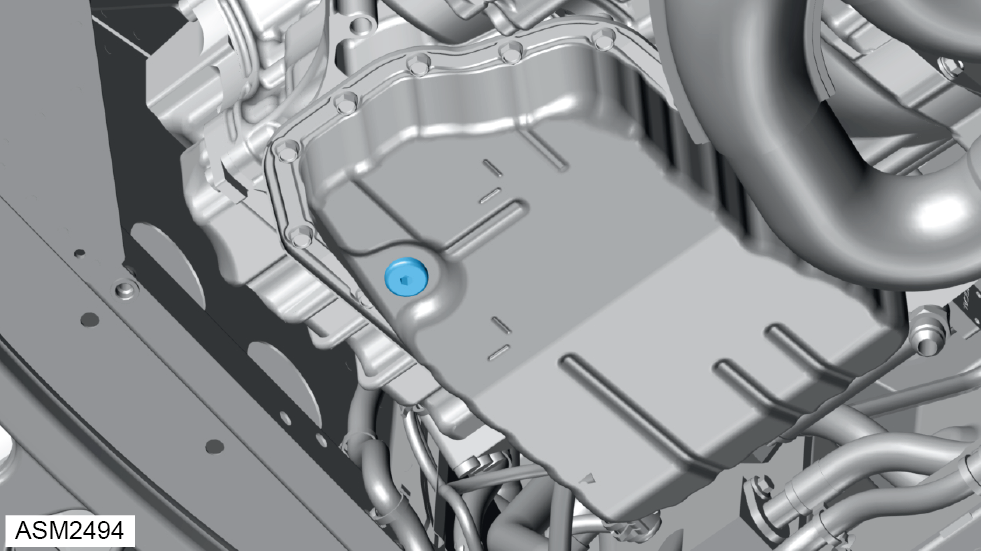
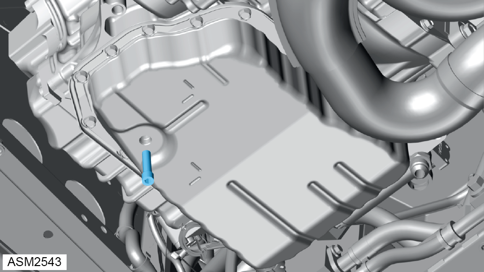
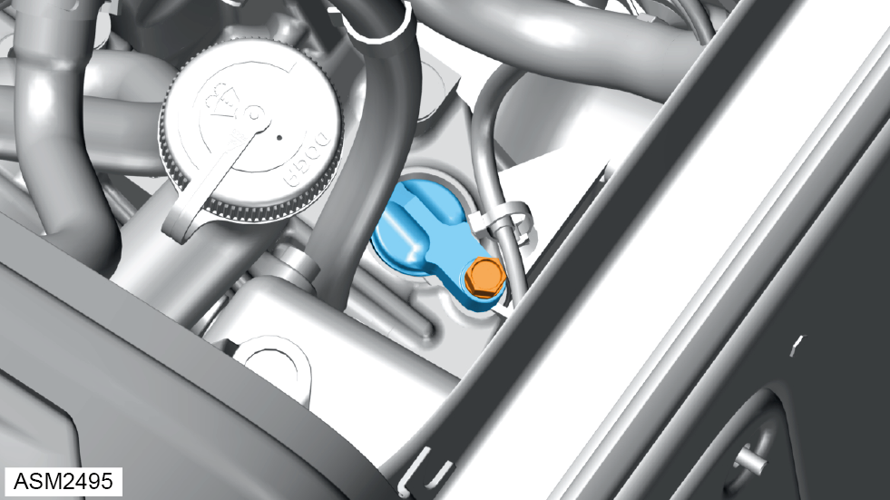

Transmission Oil Drain - Refill - Auto - V6
Print
Operation Code: 47.02.12-00
Important Information
 WARNING: Transmission oil is a toxic substance and can be lethal if ingested. Wear protective gloves, protective clothing and safety glasses.
WARNING: Transmission oil is a toxic substance and can be lethal if ingested. Wear protective gloves, protective clothing and safety glasses.
Drain
- Start engine.
NOTE: Make sure that electrical systems such as air conditioning system, audio system and lighting system are off and let engine coolant temperature rise to normal running temperature.
- Using selector, slowly select P R N D buttons, allowing transmission enough time to select each gear, then move selector back to ‘P’ - Park.
NOTE: Slowly selecting P R N D will allow enough time for the fluid to circulate through each part of the transaxle.
- Select either ‘P’ - Park or ‘N’ – Neutral.
- Press and hold ‘P’ – Park button for 15 seconds. Engine coolant temperature display will change to automatic transmission fluid temperature display.
NOTE: Although display will change, the temperature value will not be shown until transmission fluid temperature rises to over 40°C.
- Allow temperature within transmission to rise to 40°C.
- Remove rear undertray. Refer to procedure.
- Position a suitable container under level/overflow plug.

- Using a 6 mm hexagon drive socket, remove level/overflow plug.
WARNING: Hot transmission oil may drain out.

- Using a 6mm hexagon socket wrench, remove level/overflow tube.
- Allow transmission oil to drain.
WARNING: Up to 3 litres of hot transmission oil may drain out.
NOTE: Dispose of transmission oil appropriately.
- Install level/overflow tube. Torque 2 Nm.
Refill
- Remove engine bay trim cover rear. Refer to procedure.

- Remove bolt securing speedometer blanking plug to transmission.
- Remove speedometer plug and O-ring.
- Using a suitable funnel, fill transmission with oil through speedometer drive hole until it begins to flow out of overflow plug hole and wait for it to slow down to a drip.
- Install level/overflow plug. Torque 40 Nm.
- Temporarily Install speedometer blanking plug and new O-ring.
- Check and top up transmission oil if necessary. Refer to procedure.